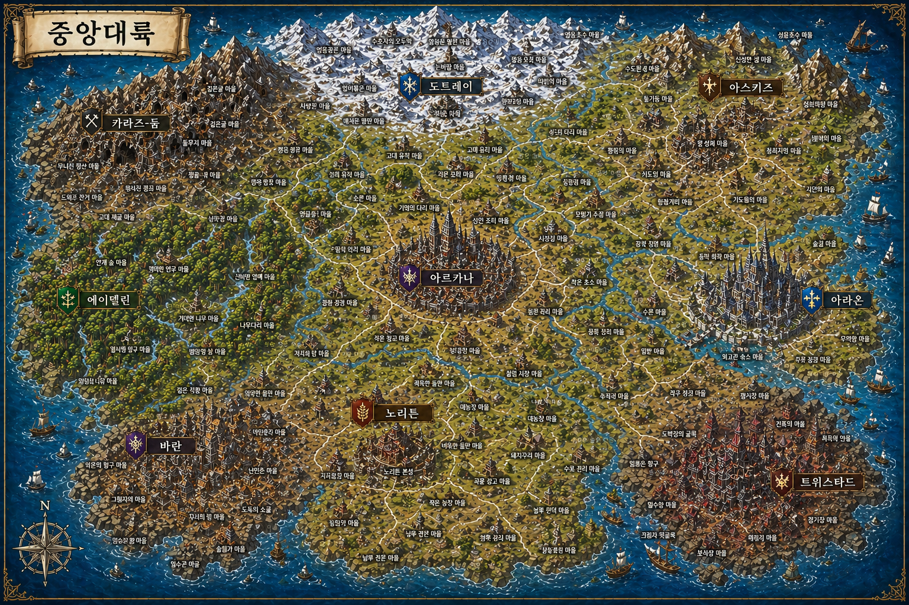

환경과 탐험
시간대, 계절, 날씨에 따라 가능한 활동과 조우 위험이 달라집니다. 채집은 건강, 수색은 지능을 사용합니다. 야간에는 시야가 좁아지고 기습 위험이 커집니다.

TRPG 기획 포트폴리오
제국이 무너진 뒤, 중앙대륙의 도시와 숲은 저마다의 질서를 되찾아 갑니다. 탐험과 생활, 전술 전투로 그 세계를 여행하는 중세 판타지 TRPG입니다.
중앙대륙 탐색WORLD ATLAS
제국 시절의 성스러운 도시를 거대한 숲이 삼켰습니다. 오래된 성소와 희귀 식물을 찾을 수 있지만 지형과 야생 환경이 예측하기 어렵습니다.
동대륙과의 교역과 교류로 질서를 되찾은 도시입니다. 치안은 안정적이고, 모험보다는 교역과 생활 활동에 유리합니다.
눈과 얼음으로 덮인 북방의 땅입니다. 사냥터와 야영지를 오가는 원정에서는 추위에 대비한 장비와 보급이 중요합니다.
산악 지대에 남은 광산과 갱도 유적입니다. 광물과 옛 시설의 흔적을 찾을 수 있으며, 붕괴 위험을 살펴야 합니다.
GAME SYSTEMS
시간대, 계절, 날씨에 따라 가능한 활동과 조우 위험이 달라집니다. 채집은 건강, 수색은 지능을 사용합니다. 야간에는 시야가 좁아지고 기습 위험이 커집니다.
낚시에는 힘, 요리에는 지능, 재봉에는 정밀을 사용합니다. 연금은 재료의 비율로 효과를 정하고 지혜로 품질과 안정성을 판정합니다.
사건의 성공과 실패 모두 성장 정산으로 이어집니다. 사건에서 실제로 수행한 행동을 바탕으로 능력치 숙련도나 새 스킬 등의 후보를 구성합니다.
힘은 근접 행동, 건강은 저항과 체력·스테미나, 속도는 회피와 턴 순서를 담당합니다. 정밀은 명중과 원거리 행동, 지능은 마법, 지혜는 통찰과 정신 저항, 매력은 설득에 쓰입니다. 건강 1당 최대 체력과 스테미나가 각각 5 증가합니다.
기본 턴 순서는 속도가 높은 유닛부터입니다. 같은 속도라면 보조 판정이나 진행자의 판단으로 순서를 정합니다. 공격 유형과 상황에 따라 방어, 회피, 역공으로 대응할 수 있습니다.
COMBAT CONDITIONS
행동·반응·방어가 제한됩니다. 행동할 수 없는 자기 턴을 보낸 뒤 해제되며, 다음 자기 턴 종료까지 기절 저항을 얻습니다. 저항 중 기절 부여 확률은 기존의 절반입니다.
행동과 반응은 가능하며, 방어·회피 판정 결과는 절반으로 줄어든 뒤 반올림합니다. 매 자기 턴 종료 시 현재 건강 주사위를 굴려 누적 합계가 최대 건강 이상이면 해제합니다. 마비 재부여 시 기존 누적값은 유지됩니다.
이동과 회피가 제한되며, 근접 공격의 방어 판정에 −3을 적용합니다. 명시적으로 회피를 허용하는 효과는 예외입니다. 일어서는 데 자기 턴 전체를 사용합니다.
정밀을 기준으로 스택을 판정합니다. 임계점에 도달하면 명중 결과가 절반이 됩니다. 매 턴 굴린 현재 정밀 주사위의 누적 합계가 최대 정밀 이상이면 해제합니다.